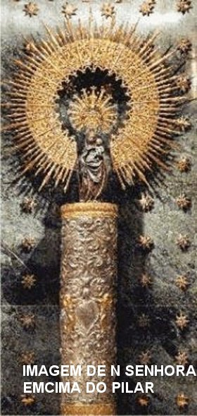
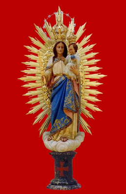
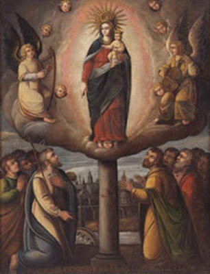

“O MARAVILHOSO
PILAR DE LUZ”

Admirado e repleto de felicidade Tiago permanecia ajoelhado, e olhando para NOSSA SENHORA... Assim recebeu interiormente a ordem de construir naquele local um Templo, onde a intercessão de MARIA aconteceria, e ali havia de se firmar como uma indestrutível Coluna, até a consumação dos Tempos. Disse nossa MÃE SANTÍSSIMA: "A coluna permanecerá neste lugar até o fim do mundo".
Em seguida, a MÃE DE DEUS com um olhar tranquilo e com palavras suaves lhe anunciou que, depois de construir a Igreja em Zaragoza, ele devia voltar a Jerusalém. Com estas palavras a SANTÍSSIMA VIRGEM MARIA despediu-se e a nuvem que trouxe a MÃE, envolveu a Coluna e NOSSA SENHORA nela foi se elevando gradativamente, retornando a Sua residência em Jerusalém. Naquele momento, Tiago levantou-se e chamou os discípulos que também tinham visto a luz, e correram para junto dele. Ele então lhes comunicou toda aquela maravilhosa Aparição da MÃE DE DEUS. Todos repletos de muito amor, seguiam com os olhos aquele admirável esplendor que ia desaparecendo nas nuvens do Céu.
MISSÃO DIVINA NA GALÍCIA 
A primeira providência de São Tiago foi arranjar um local absolutamente seguro para guardar aquela especial “Coluna de Jaspe” que além de ser uma preciosa relíquia, testemunhava materialmente a visita de NOSSA SENHORA. Depois, ele se reuniu com as pessoas que mais se destacavam pelo conhecimento e interesse na evangelização, elegendo o Chefe e os Auxiliares Responsáveis, homens e mulheres que iam atuar em posições definidas auxiliando-se dedicadamente, a fim de que fosse continuada no mesmo ritmo a Obra Missionária em Zaragoza. A seguir, partiu com cinco de seus Discípulos para a nova Missão. Ele estava preparado para enfrentar e superar com garra e entusiasmo, todas as dificuldades que por certo iriam surgir, porque era a Vontade Divina que a Galícia fosse evangelizada.
De fato, desde o inicio, a Nova Missão apresentava características diferentes, que exigiam maior aplicação, assim como um empenho mais meticuloso, devendo ser reunido grupos de famílias, a fim de possibilitar efetivos e apreciáveis sucessos. Também a exemplo de outras localidades, Tiago com a ajuda do povo, conseguiu construir pequenas Capelas em várias localidades. Aquele espaço servia não só para as orações, mas também para ele se reunir com os grupos de missionários, onde combinavam esquemas de atuação e de trabalho, administrando desse modo, as instruções necessárias no sentido de possibilitar aos grupos missionários uma eficaz execução na região que cada equipe ia atuar.
Todos os grupos religiosos sempre se mostravam assíduos aos ensinamentos do Apóstolo e dos Discípulos, exercitando com fidelidade a comunhão fraterna, estendendo as mãos e sempre socorrendo os mais necessitados, além de cultivarem um espírito aberto, sempre pronto a servir materialmente. Na fração do pão e nas Orações, era observado um respeitoso silêncio, fazendo compreender através das palavras, um honesto e profundo respeito à dignidade da presença do DEUS da Vida.
Tiago orientou e preparou de tal modo aquelas pessoas, que de modo brilhante e fervoroso, pregavam o Evangelho com entusiasmo, fazendo nascer e crescer, uma fé forte e preciosa no coração de muitos cristãos. Tanto os homens como as mulheres se tornaram verdadeiros missionários, em todas as cidades e locais aonde chegavam, atuando com respeito e muita responsabilidade, ensinando e descrevendo as passagens evangélicas com fervor e autenticidade, e deste modo, prendia a atenção dos presentes e cativava o povo com a verdade cristã. E assim, em cada etapa do trabalho, cientes do dever cumprido, eles revelavam a São Tiago que sentiam uma felicidade imensa no coração. O Apóstolo permaneceu trabalhando firme naquela região e dedicadamente se empenhava, sempre buscando melhores meios e argumentos mais precisos, para criar fortes raízes do ideal cristão. Aproximadamente durante 2 anos ele permaneceu na Galícia e depois, deixando uma excelente equipe em cada cidade, que também funcionava de maneira correta e entusiasmada, decidiu então retornar a Zaragoza com cinco Discípulos.
CONSTRUÇÃO DO TEMPLO

E assim aconteceu, aquela pequena e primitiva capelinha nas margens do Rio Ebro foi sendo melhorada e bem edificada com o correr dos séculos, até se transformar na grandiosa Basílica que hoje acolhe todos os fiéis visitantes do mundo inteiro. Com o passar dos séculos, também foi ampliada, ganhou lindas torres e ficou cada vez mais vistosa e bonita. É o centro vivo e permanente das numerosas peregrinações que, de todos os países, vêm rezar e venerar a imagem da SANTÍSSIMA VIRGEM DO PILAR, suplicar saúde e bem estar para as famílias, assim como paz para o mundo inteiro. Numa Capela especial foi colocada a bela COLUNA RESPLANDECENTE, utilizada pela SANTA MÃE, que se tornou um objeto muito precioso, porque é um testemunho da verdade, da inesquecível visita da nossa querida e amada MÃE DE DEUS.